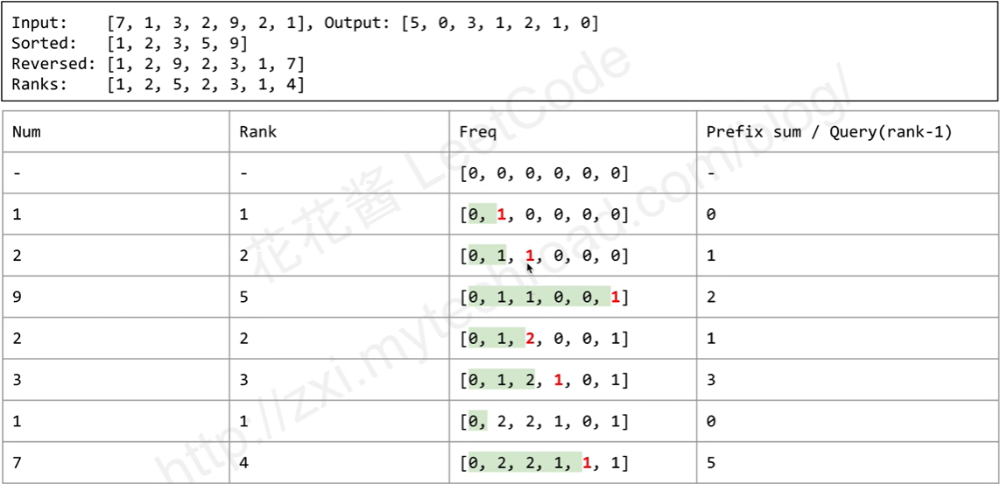
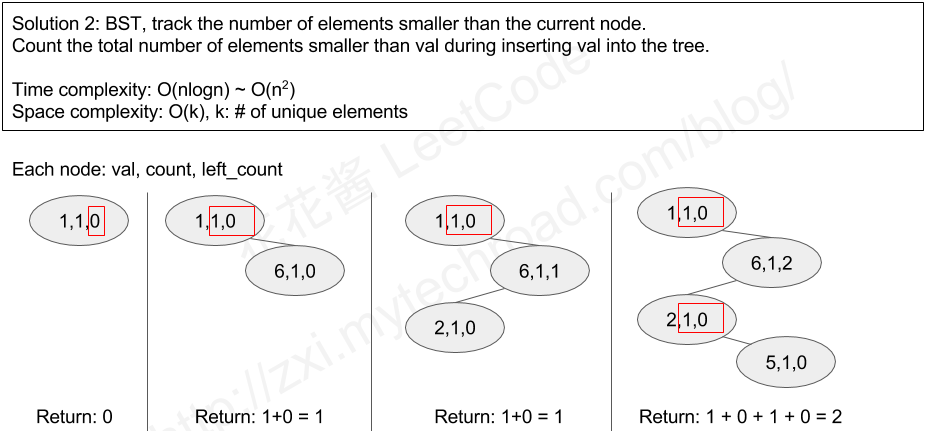

Task
You are given an integer array nums and you have to return a new counts array. The counts array has the property where counts[i] is the number of smaller elements to the right of nums[i].
Example
1
2
3
4
5
6
7
|
Input: [5,2,6,1]
Output: [2,1,1,0]
Explanation:
To the right of 5 there are 2 smaller elements (2 and 1).
To the right of 2 there is only 1 smaller element (1).
To the right of 6 there is 1 smaller element (1).
To the right of 1 there is 0 smaller element.
|
Solution
转换为频率用BIT求和
- 如下图

- 由于要看某个数之后的部分，转换为prefix sum时需将数组逆序
- 由于只需考虑大小关系不需要看绝对数值，故将数组中的值映射为它在这一堆数中的大小顺序（rank），这样可直接作为索引在频率表中更新对应数值。若不转为rank，频率表可能会非常大
- 维护一个频率表（freq），遍历数组时每看到一个数就将其在频率表中对应位置的频率（图中红色）+1
- 对一个元素求出当前频率表时，在频率表中该位置左侧的prefix sum（图中绿色部分）即是所求结果
时间复杂度：全排序耗时O(nlog(n))，建立哈希表耗时O(n)，对整个数组建立/索引BIT耗时O(nlog(n))，总时间复杂度为O(nlog(n))空间复杂度：假设unique的元素有k个，则储存排序后unique元素的set为O(k)，储存映射到rank的哈希表为O(k)，BIT的大小是k+1，故总空间复杂度为O(k)- 该方法比BST更慢的原因可能是排序和建立哈希表产生额外开销
- 实现（FenwickTree类照搬LeetCode307）：
1
2
3
4
5
6
7
8
9
10
11
12
13
14
15
16
17
18
19
20
21
22
23
24
25
26
27
28
|
// Runtime: 28 ms, faster than 82.52% of C++ online submissions for Count of Smaller Numbers After Self.
// Memory Usage: 12 MB, less than 50.00% of C++ online submissions for Count of Smaller Numbers After Self.
class Solution {
public:
vector<int> countSmaller(vector<int>& nums) {
//首先排序，用set是为了自动取unique
set<int> sorted(nums.begin(),nums.end());
//用哈希表将数组中的值映射为其大小顺序
unordered_map<int,int> ranks;
int rank=0;
//对排序好的unique的数组遍历，得到每个数的大小顺序
for(const int num:sorted)
ranks[num]=++rank;
vector<int> ans;
//建立BIT
FenwickTree tree(ranks.size());
//逆序遍历原数组
for(int i=nums.size()-1;i>=0;--i){
//取频率表中前面的和
ans.push_back(tree.query(ranks[nums[i]]-1));
//对这个数在频率表中对应的值+1
tree.update(ranks[nums[i]],1);
}
//逆序回来
reverse(ans.begin(),ans.end());
return ans;
}
};
|
使用BST的左子树
- BST中左子树的节点数量表示小于当前节点的节点数
- 如下图，在构造BST的过程中对左子树统计频率

- 每个节点是一个tuple：(当前值val，当前值出现的次数cnt，左子树中所有值出现的次数left_cnt)
- 遍历数组时，每读到一个数：
- 维护一个计数值ans，为该数对应的结果（即左侧比它小的数字个数），用递归求ans
- 从根节点开始往下走
- 若数值与某节点相同，则增加该节点的频率cnt，终止递归并向结果ans中累加该节点的left_cnt
- 若数值小于某节点，则增加该节点的左子树频率left_cnt并继续往下走。若不能继续往下走，则新建节点终止递归
- 若数值大于某节点，则向结果ans中累加该节点的cnt+left_cnt并继续往下走。若不能继续往下走，则新建节点终止递归
时间复杂度：
- 最好的情形是完全二叉树，每次递归深度为O(log(n))，总时间复杂度为O(nlog(n))
- 最差的情形是每个节点只有一个子节点，每次递归深度为O(n)，总时间复杂度为O(n^2)
空间复杂度：每个unique值对应一个BST的节点，故空间复杂度为O(k)，其中k是unique值的数量- 用递归实现BST：
1
2
3
4
5
6
7
8
9
10
11
12
13
14
15
16
17
18
19
20
21
22
23
24
25
26
27
28
29
30
31
32
33
34
35
36
37
38
39
40
41
42
43
44
45
46
47
48
49
50
51
52
53
54
55
56
57
58
59
60
61
62
63
64
65
66
67
68
|
// Runtime: 16 ms, faster than 97.68% of C++ online submissions for Count of Smaller Numbers After Self.
// Memory Usage: 20.7 MB, less than 50.00% of C++ online submissions for Count of Smaller Numbers After Self.
struct BSTNode{
int val;
int cnt;
int left_cnt;
BSTNode *left;
BSTNode *right;
//根据val对各数据成员初始化
BSTNode(int val): val(val),cnt(1),left_cnt(0),left(nullptr),right(nullptr) {}
//被销毁时要将其子节点也一同销毁，避免内存泄漏
~BSTNode(){delete left; delete right;}
//内联地返回小于等于它的元素数量
inline int less_or_equal() const {return cnt+left_cnt;}
};
class Solution{
public:
vector<int> countSmaller(vector<int> &nums){
//处理输入为空的情形
if(nums.empty()) return {};
//逆转输入，转化为从前往后计数
reverse(nums.begin(),nums.end());
//用输入的第一个数初始化BST的根节点，用智能指针可使root被销毁时自动释放资源，防止内存泄露
unique_ptr<BSTNode> root(new BSTNode(nums[0]));
//将结果的第一个数初始化为0
vector<int> ans{0};
//从输入的第二个数开始，向BST中插入节点
for(int i=1;i<=nums.size()-1;++i)
ans.push_back(insert(root.get(),nums[i]));
//将结果逆转
reverse(ans.begin(),ans.end());
return ans;
}
private:
//该函数在递归调用的过程中累加途经各节点的计数值，得到结果
int insert(BSTNode *root,int num){
//若num等于当前节点的值，则终止递归。并向结果中叠加当前节点的left_cnt
//因为当前节点的left_cnt即表示已看过的比num小的数的数量
if(num==root->val){
++root->cnt;
return root->left_cnt;
}
//若num小于当前节点的值，向其左子树走，并向结果中叠加0
//因为当前节点比num大，要检查左子树才能知道有多少元素比num小
else if(num<root->val){
//由于进入当前节点的左子树，故增加当前节点的left_cnt
++root->left_cnt;
//若当前节点没有左子树，则创建节点，终止递归。且当前节点在这个值到来之前，其left_cnt必是0，向结果中叠加0
if(root->left==nullptr){
root->left=new BSTNode(num);
return 0;
}
//若当前节点有左子树，则继续走。并向结果中叠加0
return insert(root->left,num);
}
//若num大于当前节点的值，向其右子树走，并向结果中叠加当前节点的cnt+left_cnt
//因为当前节点比num小（叠加cnt），其左子树的值必然也比num小（叠加left_cnt）
else{
//若当前节点没有右子树，则创建节点，终止递归。并向结果中叠加当前节点的cnt+left_cnt
if(root->right==nullptr){
root->right=new BSTNode(num);
return root->less_or_equal();
}
//若当前节点有右子树，则继续走，并向结果中叠加当前节点的cnt+left_cnt
return root->less_or_equal()+insert(root->right,num);
}
}
};
|